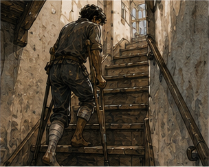
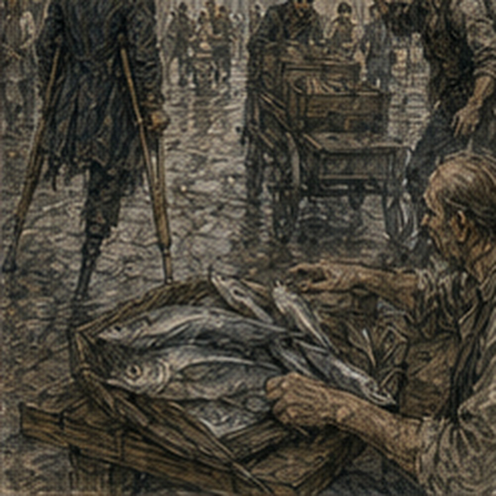

The rail was finished before I was. This seemed unfair. Lerris fitted the last section around the landing while I ate breakfast in the kitchen and tried not to watch. I failed. The ash ran from the first step all the way through the upper two, smooth and pale against old dark wood. Three posts. Solid return at the top. No rope. No cleverness.
Just a rail. Lerris leaned his weight against it.
“Done.”
I looked at him.
“That was your test?”
“No.”
“What was the test?”
“The work.”
“Useless answer.”
“Pay me.”
I gave him the remaining two copper. He counted it. Dela's material share had already been settled. Six copper total. Three hers. Three mine. A staircase now had a rail because I wanted my room. Reasonable.
“Can I use it?”
Lerris shrugged.
“Rail can.”
“Me.”
“Ask healer.”
Everyone owned something. Fine. I put one hand on the ash. Smooth. Warm from Lerris's hand. Solid. My room was fourteen steps away. I did not climb. This was restraint. Also fear. Mostly restraint. Probably.
*
The keeper made me test the front door before I left. Not the stairs. Door.
“What?”
“You keep catching the bottom with the crutch.”
“I do not.”
“You did twice yesterday.”
I had. The threshold was low enough that I had stopped noticing it as a problem, which apparently meant I was now careless enough to make it one again. Crutches. Right foot. Door. I cleared it.
“Again.”
“You are not Sera.”
“No.”
“Then no.”
She opened the door wider. I went through. Petty victory. Outside, morning traffic moved around the waiting cart. A fish seller knew me enough to nod. A woman I did not know stared at the missing lower leg for two seconds, then asked the driver to move because he was blocking her handcart. Correct priority. I got in. The cart to Guild arrived late.
Five minutes. I was irritated enough to consider starting without it. Then remembered six blocks. No. The driver apologized. I said fine. Actual fine. Progress was becoming tedious. At Guild I passed the contract board. A posting for canal tally.
Another for warehouse night watch. A Copper carrying rope took one. I kept moving. No job today. Sera looked at the wound. Minimal drainage. No heat. No spreading redness. The questionable margin remained viable. Swelling down from two days ago.
“Good.”
“There it is.”
“What?”
“Everyone says good.”
“Would you prefer infected?”
“No.”
“Then good.”
Fair. She pressed along the end. Sharp spot still sharp. Numb patch still numb. Phantom ankle currently felt twisted outward. Actual knee straight. Body maps were stupid.
“Rail finished?”
“Yes.”
“Want to try?”
There.
“Yes.”
“Here first.”
Of course.
“Seven?”
“Seven twice.”
I looked at her.
“Twice?”
“Up and down. Rest. Again.”
“That is twenty-eight stair movements.”
“Look at you doing arithmetic.”
“Fourteen home is also twenty-eight if I come back down.”
“Not today.”
Right. Goal was room. Not commute. Nerin joined us.
“Face.”
“I haven't made one.”
“You did when she said twice.”
“That's just my face.”
“Unfortunate.”
Seven steps. Rail. One crutch. Right foot. Up. The first ascent felt almost easy. That was dangerous. Not dangerous. Encouraging. Stop dramatizing. At the top my right thigh burned but did not shake. Rest. Down. Still harder.
The phantom foot wanted a lower step that did not exist for it. I paused at step four. Rail. Crutch. Right foot. Actual contacts. Continue. Bottom. Sit. Three minutes. Again. Second ascent harder immediately. There. Fatigue.
Step five felt like yesterday's seven. Step six required more arm. Seven. Top. I breathed. Nerin said nothing. Good. Down. At step three my right thigh trembled. Small. Enough. I stopped. Sera said, “Sit on the step.”
“What?”
“Practice.”
Ah. She showed me how to turn carefully toward rail, lower with control, keep residual limb clear, sit sideways enough not to trap the crutch. Awkward. I sat on step three. This was deeply undignified. Also useful.
“What if I need to do this at home?”
“Then you sit.”
“People need stairs.”
“Stairs do not care.”
I hated that. We practiced standing from the step. Rail. Crutch. Right leg. Hard. Possible. Then down. At bottom my arms shook. Not badly. Real. Sera looked.
Sera said, “Home attempt this afternoon if swelling remains controlled.”
I stopped.
“Today?”
“Yes.”
“Fourteen?”
“With rail. With spotter. One ascent. You stay upstairs afterward.”
My chest did something.
“Descent?”
“Not today unless necessary.”
“So I get there and become trapped.”
“You get there and remain in your room until tomorrow.”
“My room.”
“Yes.”
There.
“Who spots?”
“Nerin can come if Guild allows.”
Nerin said, “I have patients.” Right. Life.
“Hessa may be available,” Sera said. “Or someone competent after instruction.”
“Jorren?”
Sera made a face.
“Competent.”
“Rude.”
“Can he follow instructions?”
“Yes.”
“Will he?”
“Probably.”
“Bad answer.”
“Sevren?”
“Same.”
“Alden?”
She looked at me.
“No.”
“Why?”
“Because I have met Alden.”
Fair.
“Keeper?”
“Could.”
Sera thought.
“I would prefer someone who can physically control your belt or trunk if you lose balance.”
“Jorren.”
“Then bring Jorren here first or have Nerin instruct him at lodging.”
“Can you come?”
“No.”
Good. She had work. No special procession.
“Wound check tomorrow?”
“Yes.”
“Then descent tomorrow?”
“If today goes well and morning wound remains stable.”
“So room tonight.”
“Possibly.”
Possibly. Terrible word. I loved it.
*
At the Guild desk, the clerk had a note for me. Not a job. Good. Dorn.
One line:
GLOVE CLEAN ENOUGH. TAM HAS IT.
I read it twice. The second glove. Of course. Tam now had the glove and could apparently decide whether blood counted as leather treatment. No need to go. I folded the note. The clerk said, “There was a tally posting you might've liked.”
“Taken?”
“Yes.”
“Good.”
He looked at me.
“Good?”
“Yes.”
“Want me to tell you next time?”
“Ask me. Don't reserve it.”
“I know.”
Right. I had already said that. The system remembered without becoming a system around me. Good.
“Anything else?”
“Injury accounts says no action required unless you want separate allowance review.”
“Not today.”
“Fine.”
Done. I had an hour before the return cart. Holl's place was not far from Guild. Edrin had said I could talk to Holl about Holl's testing problem. General throughput only. No seized stock. No Silas Marris. No Varo. No Edrin. I could go. I was tired from stairs.
Sera had cleared one home ascent later. Would visiting Holl spend the legs I needed? Leg. Arms. Whatever. I sat in Guild hall. This was the actual decision. Interesting problem now. Room later. I wanted both.
Old answer might have been both. Young body could probably survive both. Fresh wound did not care about pride. I looked at the clock. No Holl. Not today. The decision annoyed me enough that I knew it was right. I wrote nothing. Good.
*
Jorren was at work. Of course. The keeper knew where. West grain office until fourth bell. I sent a runner. One copper. This day was becoming expensive in small ways. Jorren arrived after fourth bell with ink on his thumb.
“You summoned me.”
“Yes.”
“Are you dying?”
“No.”
“Then this better be interesting.”
“Stairs.”
He looked at the finished rail. Then at me.
“Today?”
“Maybe.”
His face changed. Not solemn. Focused. Good.
“Sera?”
“Cleared one ascent if swelling stayed down.”
“Did it?”
“I don't know yet.”
“You're supposed to know?”
“I can check pain. Not tissue.”
“Then?”
“Hessa is coming for channel check and can look at dressing externally.”
“When?”
“Soon.”
Jorren sat.
“I was working.”
“I know.”
“You owe me.”
“Yes.”
“Beer.”
“Yes.”
“Two.”
“One.”
“Leg tax.”
“Fuck you.”
He smiled. Good. Hessa arrived ten minutes later. She looked at rail first.
“Better.”
“Everyone.”
“What?”
“Nothing.”
She checked my hands. Wraps holding. No blister. Channels quiet. Then dressing. She did not unwrap fully. Sera had done that. No seepage through. No new heat I could feel. Swelling not obviously increased from morning.
“Physically tired?”
“Yes.”
“How much?”
“Seven twice.”
“Why?”
“Sera.”
“Fine.”
“Room.”
“I know.”
“Everyone knows everything.”
“Carrow.”
Terrible. She looked at Jorren.
“You spotting?”
“Apparently.”
“Have you done it?”
“No.”
Hessa showed him. Not by making me climb. "Belt. One step below and slightly behind on ascent. Do not pull unless he actually loses balance. Do not stand directly behind where he could fall onto you. Do not grab the crutches. Do not improvise." Jorren listened. Actually listened. Good. Keeper stood at bottom. Not because committee. Because it was her staircase and we were blocking it.
“Ready?”
Hessa asked. No.
“Yes.”
I put one crutch aside. Left hand crutch. Right hand rail. Wait. At Guild rail had been right hand. Home open-side rail was right going up too. Good. Lerris. Useful. Right foot on first step. Crutch up. Rail. Push. One. Easy. Two. Fine. Three. My heart too fast. Not body. Fear. Four. Five. Right thigh working. Six. Seven. Half. No. Seven of fourteen.
Not half of effort. Stop arithmetic. Eight. The rail changed slightly where post met landing geometry. Hand position. Fine. Nine. Ten. My arms were already more tired than at Guild second ascent. Because I had done Guild. Of course. Eleven. Right thigh trembled. Small. Twelve. Landing. I stopped. Two more. Only two. No. Rest. The landing was narrow. Window on left. Rail continued on open side through turn.
I had to rotate. Turning on one foot with crutch and rail. We had not practiced this exact geometry. Of course. Jorren below. Hessa at landing side now, having come up behind him? No. She had stayed below. Good. Too many bodies would be worse. I shifted crutch. Right foot pivoted. Phantom left foot tried to step across. My hip moved. I froze.
Jorren's hand touched belt. Not pulled. There. Actual. Rail. Crutch. Right foot. Turn. Done. My residual limb throbbed. Not sharp. Deep.
“Sit?” Jorren asked.
Could sit on the landing floor. Would then need stand. Two steps. I wanted room.
“Thirty seconds,” I said.
We waited. Keeper below said, “You're blocking my stairs.” I laughed. Bad timing. Good. Breath. Thigh. Hands. Two. First upper step. Hard. Second. Harder. Top. I was upstairs.

That was it. No trumpet. No revelation. I stood in the hall with my right leg shaking and both arms tired enough that I immediately wanted a chair. My room door was six feet away. Fuck. I had forgotten the six feet. Of course. Crutch. Right foot. Crutch. Right foot. Door. Jorren opened it. I hated that. Then accepted it because my hands were occupied.
My room. Same bed. Same washbasin. Empty hook where coat had been. Shelf. Window. The place smelled closed. Dust. My pillow. My actual mattress. I sat on the bed too fast. Residual limb hurt.
“Fuck.”
Jorren said, “Successful.”
“Shut up.”
Hessa came to doorway eventually. She had climbed normally after giving us space.
“Pain?”
“Expected.”
“Dizzy?”
“No.”
“Nausea?”
“No.”
“Wound?”
“Still attached.”
“Medium joke.”
“Everyone grades.”
She checked through wrap for fresh seepage. None.
“Stay here.”
“I know.”
“No descent tonight.”
“I know.”
“Privy?”
There. Fuck. Downstairs. I had known. Still.
“Chamber pot,” the keeper called from hall.
Of course. I closed my eyes. Jorren laughed.
“Heroic return.”
“Die.”
The keeper brought one. Same problem as infirmary. Different room. Fine. I was home. Mostly.
*
Jorren carried up the things I had accumulated downstairs. Not all. I stopped him.
“Calendar.”
“Already.”
“Wooden horse.”
“Yes.”
“Current notebook.”
“Yes.”
“Other notebook.”
“Which?”
“Brown.”
“Two brown.”
“Fuck.”
He brought both.
“Boot?”
I looked toward stairs. Damaged left boot downstairs.
“No.”
“Why?”
“Tam can take it.”
“Tomorrow?”
“Maybe.”
“Fine.”
Sword?
“Yes.
He brought sword. Mirror already upstairs originally? No, small oval mirror had been brought downstairs. I wanted it back.
“Mirror.”
“You made me bring that down.”
“Yes.”
“Now up.”
“Yes.”
He stared.
“Leg tax is three beers.”
“One.”
“Two.”
“Fine.”
He carried mirror. I arranged nothing. Mostly because I was exhausted. The room was not exactly as before. Some things had moved downstairs. Dust. Bed cold. But it was mine. I lay back. Phantom foot hung off the mattress. Actual residual limb rested supported. My brain insisted left heel was beyond bed edge. I shifted. No change. Fine. Jorren stood at door.
“Need anything?”
“No.”
“Food?”
“Later.”
“Water?”
I looked at empty pitcher.
“Yes.”
He filled it downstairs. Dependence. Ordinary. When he returned, he put it beside bed.
“Green door?”
“Not tonight.”
“No shit.”
“Fuck you.”
He left. Work tomorrow. His life. Good.
*
The first thing I wanted after Jorren left was the privy. Of course. The chamber pot sat beside the washbasin. Keeper had thought ahead. I had not. I stared at it. Infirmary again. No. Room. Different. Same object. I managed without help. Crutches stayed against wall. Right foot planted. Bed close. No fall.

No dignity either, but dignity was expensive and apparently did not empty bladders. Afterward I covered it and put it farther from the bed. Then realized somebody else would have to carry it downstairs. Excellent. I could probably do it one-handed while using one crutch. No. Stupid. Could tie handle to belt. Worse. Could wait until I could descend. Absolutely not. Keeper would carry it.
I hated that. She had carried chamber pots before I lost a leg. Probably. For other tenants. That did not make me like it. It did make the humiliation less cosmically specific. I lay down. My room had privacy. Privacy still required services. Fine. I slept for an hour. Woke confused. Ceiling. My ceiling. Then pain. Right thigh. Shoulders. Residual limb. Phantom toes curled.
I sat up. Bad idea. Slow. Better. Window light late afternoon. From upstairs I could see more of street than from storage room. I had forgotten. Carts. People. A dog. Two Guild cloaks. A woman carrying flowers. Nothing important. I watched. The room was worth three copper. Not rationally. Emotionally. Different accounting. Fine.
*
Arlo sent a note. Not Arlo personally. A boy.
Vessa's handwriting:
HOT CONTACT MARK UNEVEN. BODY FACE FLAT. MOUNT FACE NOT.
Then:
WE KNOW. DO NOT COME.
I laughed. Good. Mount face. Their problem. Progress.
I wrote underneath:
CONGRATULATIONS ON HAVING A CROOKED TABLE.
Then realized boy was waiting.
“Take this.”
He read? Hopefully not. Left. No work. Good.
*
Holl remained in my head. Measurement problem. Faster cheap testing. Throughput. Could talk tomorrow. Maybe. But tomorrow also descent. Wound check. Tam and boot maybe. No need all. I opened current notebook. VARO notes.
WHO SORTS / MEASURES / SPECIFIES?
I added:
FAST TEST VALUE DEPENDS ON WHAT DECISION IT ENABLES.
Then stopped. That was general. Holl's context. What decision? Accept/reject raw stone. Adjust treatment. Sort finished stock. Commercial tolerance. Could ask Holl which one he cared about. Not seized stock. Good.
I wrote:
ASK HOLL WHAT HE WANTS TEST TO DECIDE.
That was enough. No design. No chase.
*
Dinner came upstairs on a tray. Keeper. Stew. Bread. Water. I paid normal food amount. She looked around.
“Better?”
“Yes.”
“Worth rail?”
“Yes.”
“Still can't come down.”
“I know.”
“Then you're trapped.”
“Temporarily.”
She smiled.
“Your word.”
“Yes.”
She left. I ate in bed. This felt luxurious and humiliating. Mostly luxurious. Good.
*
Before dark, Octavia came by with a folded packet under one arm. She shouted from below instead of climbing first.
“Greg?”
“Up.”
A pause.
“Actually?”
“Yes.”
“Do I come up?”
“Yes.”
She climbed. Used the new rail. Of course. At the doorway she looked around.
“This is better than pantry.”
“Storage room.”
“Worse.”
She handed me the packet.
“What?”
“Sevren delivered cloth to wrong house.”
“That sounds like Sevren.”
“He says address was wrong.”
“Was it?”
“Yes.”
“Then not Sevren.”
“Don't tell him.”
I opened packet. Not mine.
“Why are you giving me this?”
“I needed both hands for stairs and you were closest surface.”
Ah. She took it back. Perfect.
“How long trapped?”
“Until tomorrow.”
“Good.”
I stared. She smiled.
“Sorry. Everyone?”
“Everyone.”
She sat on chair. We talked for fifteen minutes about nothing useful. A dyer had ruined a batch of green by making it too blue. I argued that meant it was blue. She said cloth people had more categories.
I said categories were fraud. She said magic people should not speak. Fair. Then she left because she had somewhere else to be. She used the rail going down. I listened to her hand slide along ash. Normal.
The modification already belonged to the building more than to me. Good. Night upstairs was different. Street noise. Footsteps below. The stairs creaked when someone used them. New rail did not change the sound. I could hear hands slide on ash once. Someone else using it. Dela had been right. Building kept it. Useful beyond me. Fine. I needed to piss. Chamber pot.
Less fine. I managed. No nurse. No Jorren. No applause. Then I wanted to wash. Basin. Pitcher. Cloth. All here. Better than storage room because this was where my things already lived. Small systems. My systems. I washed. Changed shirt. Getting trousers off still awkward. Right foot out. Residual limb through carefully. Sit. No standing balance trick. Learned. Not mastered. Good. I looked in oval mirror.
Face. Hair. Nineteen. Still. No meaning. I put mirror back.
*
Morning arrived with soreness. A lot. Right thigh heavy. Shoulders worse. Hands okay. Residual limb more swollen than night before. That scared me. Not panic. Close. I did not descend. Good. Keeper sent runner to Guild. Sera came? No. She had patients. Nerin came with a small bag. Correct. World did not rearrange. He climbed the stairs using new rail.
“Nice.”
“Everyone.”
He unwrapped enough to inspect. Swelling increased. No new drainage. No heat. No spreading redness. Incision intact.
“Too much?”
I asked.
“More load than usual.”
“Bad?”
“Not currently.”
“Wound breakdown?”
“No.”
“Infection?”
“No signs.”
“Revision?”
“Stop.”
“Fine.”
He rewrapped.
“Sera says no stairs today.”
“I need to get down.”
“Tomorrow.”
“So another night.”
“Yes.”
I looked around. My room. Fine. Could be worse.
“Daily check?”
“This is it.”
“Good.”
“Rest.”
“I know.”
He looked at notebook.
“Work?”
“No.”
“Face.”
“Fuck you.”
He laughed. Left.
*
Breakfast arrived on a tray. Bread. Egg. Apple. Tea. The keeper set it down.
“Pot?”
I looked at the covered chamber pot.
“Yes.”
She picked it up without expression. No ceremony. I wanted ceremony less than I wanted control. Good.
“Water?”
“Half.”
She refilled pitcher.
“Anything from downstairs?”
I almost said boot. No.
“Nothing.”
She left. I ate by the window. From here I could see the roofline toward the Guild district if I leaned. Not the Guild. Just direction. Holl's shop was somewhere beyond two streets and a turn. Varo farther. Arlo elsewhere. Work everywhere. I was upstairs eating an egg. This was not exile. It was also not mobility. Both. A runner passed below with Guild colors.
Not for me. Good. Then another. Also not. I laughed at myself. Nobody could hear. I spent the morning upstairs. This was the part I had not modeled. Getting room back meant being in room. Not doing anything. No kitchen table. No easy front door. No spontaneous green door. No Guild board. No Holl. I had traded storage-room access for upstairs privacy.
Temporarily. Interesting. Could regret? No. Worth it. Still. Environment solved one barrier and exposed another. No slogan. I read. Actually read. A cheap adventure pamphlet Jorren had left weeks ago. Terrible. A knight fought a marsh serpent by climbing a tree in full armor. Impossible. I read all of it. At noon I was bored enough to consider sinkstone. Then decided not to.
I read the pamphlet again looking for logistical errors. That was sinkstone-adjacent behavior. Fine.
*
Alden came in afternoon. He shouted from below.
“Upstairs?”
“Yes.”
“Fuck.”
He climbed. Saw me in bed.
“You did it.”
“Once.”
“Down?”
“Not yet.”
“So trapped.”
“Everyone says.”
He sat on floor. Again.
“Training?”
“No.”
“Good.”
I looked at him.
“Everyone.”
“What?”
“Nothing.”
He pulled the practice knife. Not to train. He started flipping it.
“Don't drop that.”
“Why?”
“Floor.”
“Your floor?”
“Yes.”
He dropped it. I stared.
“Accident.”
“Get out.”
He laughed. Picked it up. We talked. Pessa had beaten him again. He was furious. Good.
“Why?”
“She waited.”
“For?”
“Me to commit.”
“Then?”
“Moved.”
“Sounds effective.”
“Fuck you.”
I smiled. He described it physically. Foot position. Timing. Shoulder feint. I could see it. Old body memory and current young body both supplied answers.
“Your first step too big?”
He stopped.
“Maybe.”
“Pessa makes you reach?”
“Yes.”
“Then smaller.”
“You haven't seen it.”
“No.”
“Could be wrong.”
“Yes.”
He looked at me.
“That's new.”
“Fuck you.”
He grinned. Maybe. No lesson. We moved on.
*
By evening swelling had eased. Good. Tomorrow descent if stable. I wanted downstairs now. Also wanted room. Both. Annoying. The rail had not solved home. It had changed home. That was enough. I opened notebook.
HOLL: WHAT DECISION SHOULD FAST TEST ENABLE?
Under it:
RAW ACCEPT?
TREATMENT ADJUST?
FINAL SORT?
Three possibilities. Could be others. Of course. No exhaustive list. I closed notebook before making one. Then I looked at the stairs through open door. Fourteen down tomorrow. Different skill. Harder. I was afraid. There. Simple. Not of losing another leg. Not exactly. Of falling. Of wound opening.
Of getting halfway and having right leg fail. Of phantom foot stepping into nothing. Reasonable fears. Could still do it. Maybe. Tomorrow. I lay back. My room smelled less closed now. Mine again? Not fully. Access mattered. But I was here. That counted. No. Not counted. Experienced. Better. I turned out the lamp. Downstairs remained downstairs. Holl remained elsewhere. The Guild kept working.
Carrow kept moving. I stayed in bed because that was the useful thing to do. For once, staying put did not feel like failing to go somewhere. It felt like being where I had wanted to be.